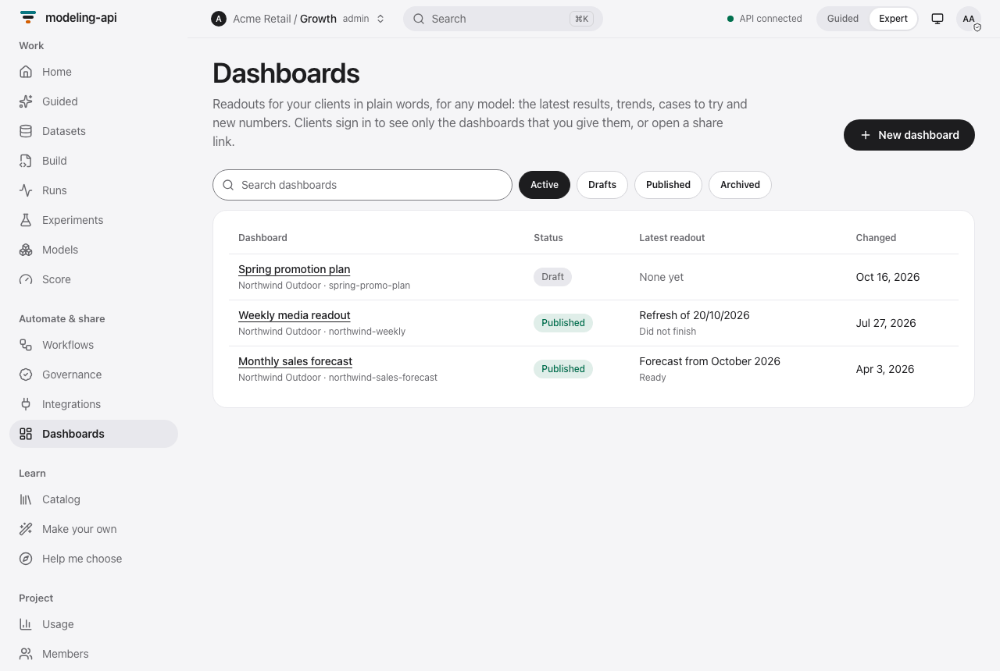
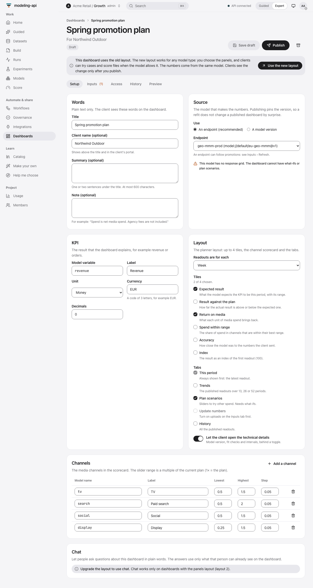
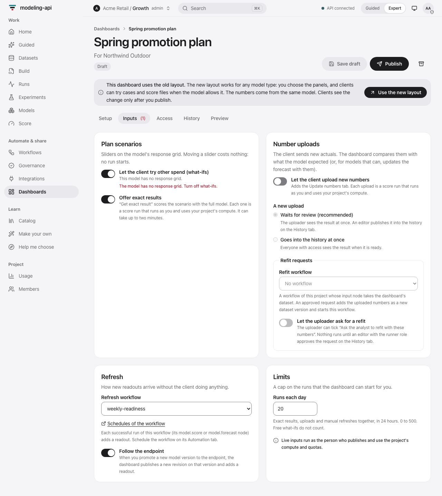
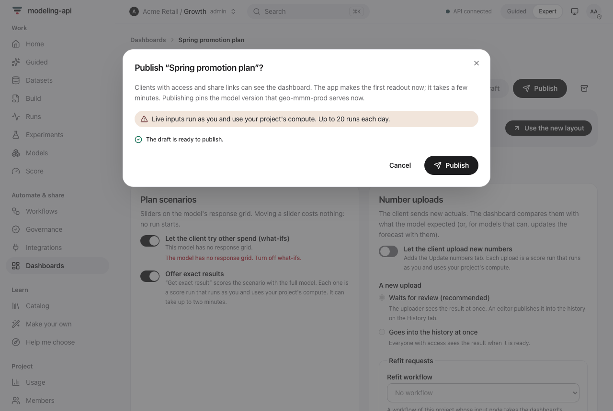
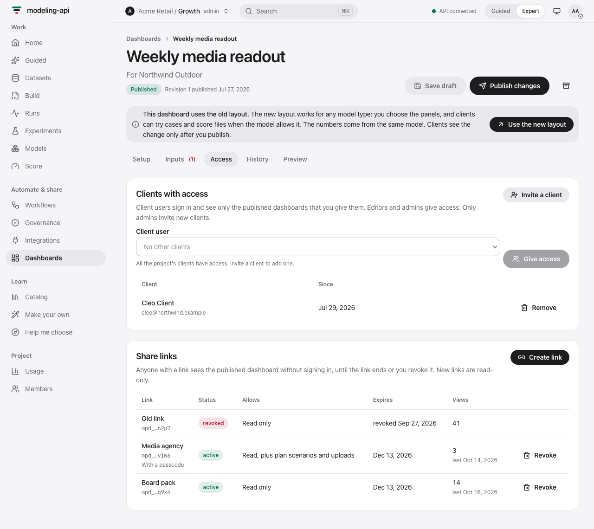
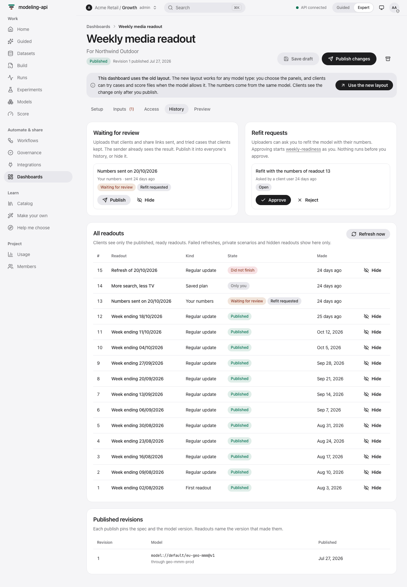

This guide is for analysts. It shows how to make a dashboard for a client, publish it and give access to it. From v0.17, a dashboard can show any model type: a forecast, a classifier, a regression, a model of a change, a map of a science model, an image model or a marketing-mix model. Client dashboards tells how the parts work. For clients is the page to send to your client.
You need:
- the
editorrole to make and change a dashboard, - the
runnerrole to publish it, because its live inputs run as you, - a fitted model version or an endpoint. For media what-ifs, the model must have a response
grid (
ui/grids/response_curves.json). The marketing-mix models of mmm-framework have one.
1. Make the dashboard¶
- Open Dashboards in the navigation.
- Select New dashboard.
- Type a name. Only your team sees the name. It must be unique in the project.
- Select the source: An endpoint (recommended) or A model version.
- Select a layout. The app looks at the model and shows the layouts that fit it, with Suggested on the best one and the reasons. A layout that cannot offer an input says why, for example "the model has no row dim".
- Select Create dashboard. The app makes a starting draft. Nothing is shown to clients before you publish.

The layouts (presets) are:
| Layout | For | Clients see first |
|---|---|---|
| Media planner | Marketing-mix models | Key numbers, the channel scorecard, trends and plan scenarios |
| Forecast | Time series models with a forecast | The next period with its likely range, and how close earlier forecasts were |
| Predictions | A value for each case (regression) | The prediction for a case, with its likely range |
| Classifier | The chance of an outcome for each case | "Chance of …" and how often the model is right |
| Effect of a change | Causal models | The total effect, the effect in percent and the chance of an effect |
| Map | Science models with a grid or areas | A map of the results and key numbers for the whole area |
| Image model | Image classifiers | The accuracy from the fit and the plots of the model |
| General | Any other model | Key numbers and charts of the outputs |
You can change the layout later on the Setup tab (Change the layout). The app asks you to confirm before anything changes.
2. Set up the content¶
The Setup tab sets what the client sees:
- Title, Client name and Summary. The client sees these words.
- What the dashboard is about: the main model output (for example
salesorp_churn), its label and its unit. For a classifier, type the class to report (for examplechurned). For the media planner, you can set the value of one unit in the currency of the spend. Then the dashboard can show where the spend of each channel sits. - Readouts are for each: the period word (week, month and more).
- Note: plain text for the client, for example "Sales are net of returns."
- Let the client open the technical details: shows the toggle "Show technical notes" (model version, fit checks and intervals).
All text is plain text. HTML tags and entities are refused.

Panels¶
The Panels list shows the parts of the page, in order. The preset fills it. You can:
- select Add a panel and choose a Key number, a Chart, a Table, a Note or a Model plot,
- remove a panel,
- move a panel up or down (also with the keyboard).
For each panel, choose the source from the list that the app reads from the model version: a model output, a metric of the fit, a check of the scorecard, the accuracy of the sent numbers or a plot of the model version. The list shows only the sources that the panel can use. A key number can show The middle value, The low end of the range or The high end of the range, and can compare with the previous readout.
The range of a key number can be:
- Where one new result will probably be (the default for results): the predictive range.
- Where the average will probably be: a narrower range.
Some rules keep the numbers correct. The app tells you in plain words when a choice is not possible:
- A total over the forecast comes from the draws of the model, so its range is correct. A total of single values is marked Approximate. A total of a range that the model gives as quantiles is refused ("show per-period values").
- A dashboard has a maximum of 24 panels and 8 key numbers.
- A Model plot that the page cannot draw is a picture. The app makes it one time when you publish. Until it is ready, clients see "The picture is being prepared".
Select Save draft. The Preview tab shows the saved draft as a client sees it, from the latest readout. In the preview, your team also sees the real plots of the model.
3. Set the inputs¶
The Inputs tab sets what clients can do. No input refits the model. The tab shows only the inputs that the layout and the model allow. If an input is not possible, the tab tells why.

| Setting | Effect | Cost |
|---|---|---|
| Let the client try cases | Adds Try a case. The client changes a few values and sees the prediction with its range | One score run for each try |
| Let the client upload new numbers | Adds Check accuracy (or Update numbers in the media planner) | One score run for each upload |
| Let the client score a file | Adds Score a file. The client sends a CSV file of new cases and downloads the predictions | One score run for each file |
| Let the client try other spend (what-ifs) | Media planner only. Adds Plan scenarios. Sliders on the response grid | Free. No run starts |
| Offer exact results | Media planner only. Adds Get exact result to the scenarios | One score run for each exact result |
| Number uploads: review or auto | Waits for review (recommended): an editor publishes each upload into the history. Goes into the history at once | — |
| Let the uploader ask for a refit | Shows "Ask the analyst to refit with these numbers". Needs a Refit workflow | The refit runs only if you approve |
| Refresh workflow | Each successful run of this workflow adds a readout | No new run |
| Follow the endpoint | A promotion of the endpoint publishes a new revision on the new version | One score run for each promotion |
| Runs each day | The maximum number of runs that the dashboard can start for you in 24 hours (default 20) | — |
| Scored files each day | The maximum number of scored files in 24 hours (default 3) | — |
Try a case¶
Under Values the client changes, add the model inputs that the client can change. For each one, set the label, the type (a number, a whole number, a choice, a date or yes/no), the range or the choices, and the default. The app fills the ranges from the limits that the model declares. If the model declares no limits, the app uses the data that the model learned from and shows a warning. Make sure that each range makes sense for your client before you publish. Values that the client does not change come from the defaults.
For a forecast, Let the client choose how far ahead adds a Periods ahead input.
The server checks each value that a client sends. A value outside the range is refused and the page marks it at its field. The server never changes a value in silence. A tried case is private to the client. The client can Keep this case. Then it waits for your review on the History tab. A kept case that you publish goes into the history only: the Overview keeps the latest baseline, refresh or upload.
Check accuracy (actuals)¶
Under Match the numbers, choose how the sent numbers join the predictions:
- By period: one row for each date or period, as in a forecast.
- By case: one row for each case, with the case's id and its actual outcome. Set the Case id column (one of the model's dims) and, if necessary, the Outcome column.
The dashboard then shows the accuracy that fits the model:
| Model | Accuracy |
|---|---|
| Forecast, regression | Typical error (MAE, RMSE), error in percent (MAPE, sMAPE, WAPE), bias, R², results inside the range |
| Classifier | How often the model is right, how well it ranks cases (AUC), the probability error (Brier), the log score, calibration and the right and wrong predictions. You set the Threshold (0.05 to 0.95). Clients cannot change it |
| Causal impact | The effect so far, updated with the new numbers, with its range |
| Synthetic control, difference-in-differences | A comparison. The effect changes only after you refit, so offer a refit request |
A history of the accuracy shows the published uploads over time. Private uploads never go into it. For statsmodels models that use actuals in a forecast, the forecast uses the sent numbers. The model does not change.
Score a file¶
Set the Case id column (one of the model's dims: the builder lists them), the Outputs in the file and Rows at most (a maximum of 5000). With Check every value against the Try a case ranges, a file with a value out of range is refused with the row and the column.
The client downloads the predictions as a CSV file. Only the person or the link that sent the file, and the editors, can download it. The download stops when the private result expires (30 days by default).
Image dashboards do not let clients or share links score a file in v0.17.
4. Publish¶
Select Publish. The dialog checks the draft and tells you what is not correct. It also tells you: "Live inputs run as you and use your project's compute."

Publishing:
- pins the spec and the model version as a revision. For an endpoint, it pins the current version and the endpoint revision. A refit does not change a published dashboard by surprise.
- makes you the run-as owner. If you lose the
runnerrole later, the live inputs stop ("Inputs paused"). The readouts that exist stay visible. Publish again with a runner to start them again. - starts the first readout (the
baseline). It takes a few minutes. Image and some causal dashboards use the metrics of the fit and start no run. - makes the pictures of the model plots (a maximum of 4 for each revision).
To change a published dashboard, change the draft and select Publish changes. Clients and share links see the new revision from their next page load. The history stays.
Dashboards from v0.16¶
Your v0.16 dashboards move to the new layout by themselves when the server of v0.17 starts. A marketing-mix dashboard becomes a Media planner. A forecast dashboard with a placeholder channel becomes a Forecast. The move keeps the model version, the run-as owner, the share links, the grants and the history. The old readouts keep their old look in History.
Two things change for clients:
- They see the note "This dashboard has a new layout. The numbers come from the same model." one time.
- The likely ranges now show where one new result will probably be. They are wider than before. The middle values stay the same. Tell your clients if they compare ranges.
If the app cannot move a dashboard by itself, the builder shows "This dashboard could not move to the new layout by itself" with the issues. Clients still see the old layout. Select Use the new layout, fix the issues and publish.
5. Give access¶
The Access tab has two parts.

Clients with access. Client users sign in and see only the published dashboards that you give them.
- Select a person in Client user.
- Select Give access.
Editors and admins give access. Only admins invite new clients (Invite a client opens the
member invitation with the role client). A client role is always for one project.
Share links. Persons without an account open a link. New links are read-only. When you make a link, you can let it try cases, upload numbers, score files or try plan scenarios, if the dashboard offers them. See Share dashboards securely with a share link.
6. Review the history¶
The History tab shows all readouts, also the readouts that clients do not see: failed refreshes, private scenarios, tried cases, scored files and hidden readouts.

Readouts waiting for review lists the uploads and the kept cases from clients and share links. For each one, select Publish to add it to the client history, or Hide to keep it only for audit. Viewers see the list but cannot decide.
Refresh now (an editor) queues a new readout of the published revision.
Refit requests¶
When an uploader asks for a refit, the request shows in Refit requests. A dashboard has a maximum of one open request. A newer request replaces the older one ("Replaced by a newer request").
To approve a request, you need the editor role and the runner role:
- Select Approve on the request.
- Read the dialog. It tells which workflow starts, as you.
- Select Approve and start the refit.
The approval:
- publishes the readout of the upload,
- adds the uploaded numbers as a new version of the dataset of the dashboard (the server validates them again, with the same limits as all uploads),
- starts the refit workflow as you, through the usual governance, approval and cost checks.
When the workflow run succeeds, the refresh workflow adds a new readout. Reject starts nothing. The comparison stays available. The uploader does not see your note.
The refit workflow must be in the same project, and its input node must take the dataset of the dashboard.
Refresh without a new scheduler¶
- A workflow. Select a workflow with a
model.scoreormodel.forecastnode as the Refresh workflow. Schedule it on its Automation tab, or start it with a dataset trigger. Each successful run adds a readout from that node. No new run starts. - An endpoint. With Follow the endpoint, a promotion publishes a new revision on the new version and adds a readout. Without it, the dashboard only shows that a new version is available.
- Refresh now on the History tab.
Two refreshes of one dashboard are a minimum of 60 seconds apart. If a refresh fails, the clients see the last good readout with "Last updated DD/MM/YYYY HH.MM".
Control the cost¶
All tried cases, exact results, uploads, scored files and refreshes run as the run-as owner and use the quotas of your tenant. The limits are:
- Runs each day for each dashboard (
limits.exact_runs_per_day, default 20). - Scored files each day for each dashboard (
limits.batch_runs_per_day, default 3). - 6 runs each hour for each share link (
MAPI_SHARE_RUN_RATE_PER_HOUR). - 12 runs each hour for each client user and dashboard (
MAPI_CLIENT_RUN_RATE_PER_HOUR). - 2 scored files each day for each share link (
MAPI_SHARE_BATCH_PER_DAY) and 4 for each client user (MAPI_CLIENT_BATCH_PER_DAY). - 20 000 scored rows each day for each dashboard (
MAPI_BATCH_ROWS_PER_DAY).
Over a limit, the client sees: "You reached today's limit for new results. Try again
tomorrow or ask your analyst." (429 DASHBOARD_RUN_LIMIT). Over an hourly limit, it says
"this hour's limit" and "Try again later" instead. Retry-After gives the seconds to wait. The same case, the same file or
the same numbers within 24 hours give the cached readout, not a new run.
Chat and MCP¶
From v0.20, readers can ask an AI assistant about the numbers on a dashboard with the panels layout. The chat is off until you turn it on in Setup › Chat (Ask about your dashboard). Readers can also connect their own chat tools with a read token (Connect a chat tool with MCP).
Archive¶
Archive the dashboard (the icon next to Publish changes) hides it from clients and revokes all its share links. The readouts stay for audit.
With the API or the Python client¶
Get the presets of a model version and a starting draft, then create and publish it:
curl -s "$MAPI_URL/v1/dashboards:presets?model_id=churn&version=3" \
-H "Authorization: Bearer $MAPI_TOKEN" -H "X-Mapi-Project: growth" > presets.json
jq '{name: "churn-weekly", spec: .spec}' presets.json |
curl -s -X POST "$MAPI_URL/v1/dashboards" \
-H "Authorization: Bearer $MAPI_TOKEN" -H "X-Mapi-Project: growth" \
-H "Content-Type: application/json" -d @-
curl -s -X POST "$MAPI_URL/v1/dashboards/$DASHBOARD:publish" \
-H "Authorization: Bearer $MAPI_TOKEN" -H "X-Mapi-Project: growth"
The Python client has the same calls on client.dashboards:
from mapi_client import Client
from mapi_spec.dashboard_v2 import BatchDef, ScenarioInputDef, ScenarioRowsDef
with Client() as client:
found = client.dashboards.presets(model_id="churn", version=3)
print([(s.preset, s.reasons) for s in found.suggestions])
# the compiled spec has every client input off: turn on the ones clients may use
spec = found.spec.model_copy(update={
"scenario_rows": ScenarioRowsDef(enabled=True, outputs=["p_churn"], inputs=[
ScenarioInputDef(name="tenure", label="Months as a customer",
bind={"var": "tenure"}, type="integer", min=0, max=120,
default=12),
ScenarioInputDef(name="plan", label="Plan", bind={"var": "plan"},
type="choice", choices=["basic", "plus"], default="basic"),
]),
"batch": BatchDef(enabled=True, outputs=["p_churn"], id_column="customer"),
})
board = client.dashboards.create("churn-weekly", spec)
client.dashboards.publish(board.id) # inputs work on the published revision only
# try a case: one private prediction readout (a value out of range is refused)
tried = client.dashboards.predict(board.id, {"tenure": 24, "plan": "plus"})
print(client.dashboards.wait_readout(board.id, tried.seq).snapshot)
# score a file of new cases, then download the predictions as CSV
template = client.dashboards.batch_template(board.id)
batch = client.dashboards.score_batch(board.id, new_cases) # an xr.Dataset or XrJSON
client.dashboards.wait_readout(board.id, batch.seq)
csv_bytes = client.dashboards.download_predictions(board.id, batch.seq)
sources() reads what the model version offers to panels and inputs, upgrade() moves a
layout 1 draft by hand, keep_readout() keeps a tried case and asset() reads a picture. A
share link opened with open_share() has predict(), batch_template(), score_batch(),
download_predictions() and asset() too. See also
The Python client. All routes are in
HTTP API: client dashboards and
HTTP API: dashboards for any model type.